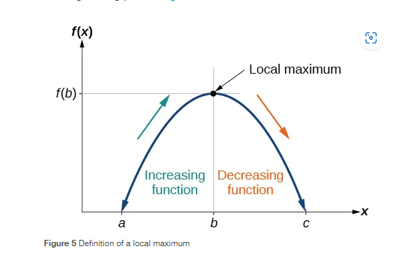

In this section we will find the average rate of change of a function and use graphs to find local and aboslute extrma. We will also explore combining functions using algebraci operations.
Our motivating questions are:
A rate of change describes how an output quantity changes relative to the change in the input quantity. If we use only the beginning and ending data, we would be finding the average rate of change over the specified period of time. To find the average rate of change, we divide the change in the output value by the change in the input value.
$$\text{Avg rate of change} = \frac{\text{Change in output}}{\text{Change in input}}$$
Since we are talking about real 2-d functions, we can think of the "change in output" as $y_2 - y_1$, and the "change of input" as $x_2 - x_1$.
$$\text{Avg rate of change} = \frac{y_2 - y_1}{x_2 - x_1}$$
Let's look at the more technical definition of average rate of change:
Def 1.4 For a fucntion $f$ defined on the interval [a,b], we define the average rate of change to be: $$AV = \frac{f(b)-f(a)}{b-a}$$
The word defined implies that the function's domain exist on that interval from [a,b]. A rate of change describes how an output quantity changes relative to the change in the input quantity. The units on a rate of change are “output units per input units.” Notice too that this formula can be applied to a function in all of its forms because we only need two points to calculate our average value, $AV$, and they are $(a, f(a))$ and $(b,f(b))$.
Give the function $f(x) = \sqrt{x}$ find the average rate of change from 4 to 16. Note that we are fine to evaluate this because $f(x)=\sqrt{x}$ is defiend on $[4,16]$.
$$AV = \frac{f(16) - f(4)}{16 - 4}$$
$$ = \frac{\sqrt{16} - \sqrt{4}}{12}$$
$$ = \frac{4 - 2}{12}$$
$$ = \frac{2}{12} = \frac{1}{6}$$
Since functions represent how an output quantity varies with an input quantity, it is natural to ask about the rate at which the values of the function are changing. For example, the function $C(t)$ below gives the average cost, in dollars, of a gallon of gasoline $t$ years after 2000.
| t | 2002 | 2004 | 2006 | 2008 | 2010 | 2012 | 2014 | 2016 | 2018 |
|---|---|---|---|---|---|---|---|---|---|
| C(t) | 1.47 | 1.94 | 2.30 | 2.51 | 2.64 | 3.01 | 3.43 | 2.14 | 2.74 |
If we were interested only in how the gasoline prices changed between 2006 and 2012, we could compute that the cost per gallon had increased from \$2.30 to \$3.01, an increase of \$0.71. While this is interesting, it might be more useful to look at how much the price changed per year. Let's use our rate of change formula:
$$\frac{\text{change in output}}{\text{change in input}} = \frac{3.01 - 2.30}{2012 - 2006} =$$ $$\frac{0.71}{6} = 0.12$$
This would be interpreted as $0.12 increase in the price of gas each year.
Functions are also represented geometrically by graphs. We can think of the x-coordinates as input values. We can think of the y-coordinates as output values. Look at the graph below for example:
Notice that the which points we pick will give a unique slope. For the first two points we would get $m_1 = \frac{-1 - 0}{-1.071 - (-1.426)} \approx -2.82$ but for the 2nd and 3rd point you would get $m_2 = \frac{-0.667 - (-1)}{-0.459 - (-1.071)} \approx 0.545$. Most functions have unique slopes for each point, which is the primary focuse of differential calculus. We will explore two types of functions that have constant slopes, and now you should be able to find the average slope or rate of change for any function.
We have already seen that it is natural to use words such as “increasing” and “decreasing” to describe a function’s behavior. We make the following formal definitions to clarify what it means to say that a function is increasing or decreasing.
Def. 1.5 A function $f$ is an increasing function on the interval $[a,b]$, if for all points $x$ and $y$ in the interval such that for all $x < y$ in must be the case that $f(x) < f(y)$.
Def. 1.6 A function $f$ is a decreasing function on the interval $[a,b]$, if for all points $x$ and $y$ in the interval such that for all $x < y$ in must be the case that $f(x) > f(y)$.
These seem technical, but what they really boil down to is that if my function is always going up between two numbers on the number line, then it is increase. If my functios is always going down between two numbers it is decreasing.
To locate the local maxima and minima from a graph, we need to observe the graph to determine where the graph attains its highest and lowest points, respectively, within an open interval. Like the summit of a roller coaster, the graph of a function is higher at a local maximum than at nearby points on both sides. The graph will also be lower at a local minimum than at neighboring points. Figure 5 illustrates these ideas for a local maximum.
Def 1.7 A function $f$ has a local maximum at a point $b$ in an open interval $(a,c)$ if $f(b) \geq f(x)$ for every point $x \neq b$ in the interval. A function $f$ has a local minimum at a point $b$ in an open interval $(a,c)$ if $f(b) \leq f(x)$ for every point $x \neq b$ in the interval.
In this section we are going to look at the general idea of combining function, first by using algebra and then by using functions as inputs to functions. Let's start by looking at the general algebra defined for functions:
Given two functions $f$ and $g$:
$$(f+g)(x) = f(x) + g(x)$$
$$(f-g)(x) = f(x) - g(x)$$
$$(f*g)(x) = f(x) * g(x)$$
$$(f/g)(x) = \frac{f(x)}{g(x)}$$
Notice that there is nothing strange about combining functions using algebra, the real trick comes with working out the actual algebra. Let's look at a quick example on the next slide.
Given $f(x)= x^2 + 3x - 1$ and $g(x) = e^{x} + 2x^2$, find $(f+g)(x)$
$$(f+g)(x) = f(x) + g(x) =$$ $$x^2 + 3x - 1 + e^{x} + 2x^2 = e^{x} + 3x^2 - 1$$
Notice that we only had one term that could combine algebraicly.
Given $f(x)= x + 3$ and $g(x) = 2x^3$, find $(f*g)(x)$
$$(f*g)(x) = f(x) * g(x) =$$ $$(x + 3)(2x^3) = $$ $$2x^4 + 6x^3$$
These really are as easy as writing out the problem and doing as much algebraic clean up as you can. Notice that with division that there will not be a lot of clean up to do right now.
Suppose we wanted to calculate how much it costs to heat a house on a particular day of the year. The cost to heat a house will depend on the average daily temperature, and the average daily temperature depends on the particular day of the year. Notice how we have just defined two relationships: The temperature depends on the day, and the cost depends on the temperature. Using descriptive variables, we can notate these two functions.
The first function, $C(T)$, gives the cost $C$ of heating a house when the average daily temperature is $T$ degrees Celsius, and the second, $T(d)$, gives the average daily temperature on day $d$ of the year in some city. If we wanted to determine the cost of heating the house on the $5^{th}$ day of the year, we could do this by linking our two functions together, an idea called composition of functions. Using the function $T(d)$, we could evaluate $T(5)$ to determine the average daily temperature on day $5$. We could then use that temperature as the input to the $C(T)$ function to find the cost to heat the house on the $5^{th}$ day of the year: $C(T(5))$
I guess we need another definition...
In defintions around functions you will often see $f:A \rightarrow B$, this is just so we know the domain and range without having to write a specific algebraic expression. Remember for most of our functions $A$ will be all real numbers.
if $f$ and $g$ are functions such that $g: A \rightarrow B$ and $f: B \rightarrow C$ we define the composition of $f$ and $g$ to be the new function $h:A \rightarrow C$ given by: $$h(x) = f(g(x))$$
We sometimes call the $g$ “inner function” and $f$ the “outer function”. Notice from the definition, our new function has the domain of the inner funtion, and range of the outer function.
| $x$ |
1 | 2 | 3 | 4 | 5 | 6 |
|---|---|---|---|---|---|---|
| $g(x)$ | 0 | 2 | 4 | 6 | 3 | 1 |
| $f(x)$ | 1 |
3 | 5 | 6 |
4 | 2 |
Find $(f + g)(5)$ and $(f o g)(5)$:
$(f + g)(5) =$ $f(5) + g(5) = 3 + 4 = 7$
$(f o g)(5) =$ $f(g(5)) = f(3) = 5$
Notice that with composition, I needed to evaluate g first then f. With arithmitic we can evaluate immediately and just work with the numbers!
Suppose $f(x) = \sqrt{3x + 10}$ and $g(x) = \frac{1}{7x + 10}$, find $(f o g)(x)$
$$(f o g)(x) = f(g(x))$$
$$ = f(\frac{1}{7x + 10})$$
$$ = \sqrt{3(\frac{1}{7x + 10}) + 10}$$
Notice that for MOM, quzzes and exams you do not need to simplify, but for those who want the challenge, our answer simplifies to:
$$\sqrt{\frac{70x + 103}{7x + 10}}$$
Given any function we can find it's rate of change using $$\text{Avg rate of change} = \frac{y_2 - y_1}{x_2 - x_1}$$
This rate of change is related to the slope of the function, and tells us if the function is increasing or decreasing on the interval
Another example video of finding average rate of change: LINK
We can combine functions using standard arithmitic or we can compose funtions with other functions
Here is another example of function composition: LINK